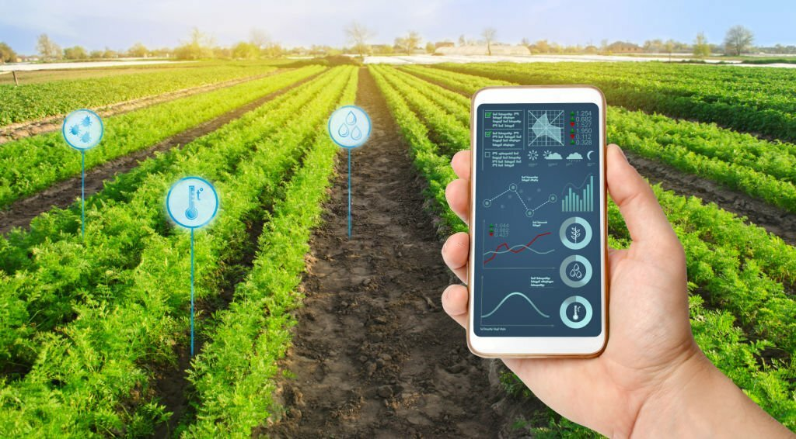

We Help You To Define New Resources
When we goint to cultivate with new technology definitely there may be new resources. So you need to know about those resourses

What Are The New Resources That Can Be Used For Cultivation?
There are more resourses can be used for farming using new cultivation. So using those new resourses, farmers can get more advantages as well they can get ore knowledge about the new resourses as well.

The emergence and widespread adoption of advanced instruments and technologies in cultivation signify a transformative era for agriculture. These tools are integral to addressing the complex challenges faced by the global farming community. Precision farming equipment, including GPS guidance systems and variable rate technology, is crucial for optimizing resource use, minimizing environmental impact, and enhancing overall efficiency in field operations. Drones and unmanned aerial vehicles provide farmers with unprecedented insights, allowing for real-time monitoring of crops, disease detection, and informed decision-making. Automated tractors, machinery, and robotic systems not only reduce labor demands but also enable precise and timely execution of tasks, contributing to increased productivity. Soil sensors and IoT devices empower farmers with data-driven insights into soil health, weather conditions, and crop status, enabling more informed and strategic agricultural practices. Smart irrigation systems play a vital role in water conservation by adapting irrigation schedules based on real-time data, addressing concerns related to water scarcity. Vertical farming equipment, biotechnology tools, and genetic editing technologies contribute to sustainable agriculture by enabling year-round cultivation, developing crop varieties with desirable traits, and enhancing nutritional content. The use of blockchain ensures transparency and traceability in the agricultural supply chain, fostering consumer trust and accountability. Additionally, augmented reality and virtual reality technologies enhance training and decision-making processes, enabling farmers to visualize and simulate various scenarios. Collectively, these instruments usher in an era of precision agriculture, where data-driven insights, automation, and sustainability converge. The importance of these tools lies in their capacity to revolutionize traditional farming methods, making agriculture more resilient, resource-efficient, and responsive to the evolving demands of a growing global population and a changing climate. The integration of these instruments is not just a technological advancement but a fundamental shift towards a more sustainable, productive, and technologically sophisticated future for agriculture.
DRONES AND UNMANNED AERIAL VEHICLES
Drones equipped with cameras and sensors provide high-resolution imagery for crop monitoring, disease detection, and yield prediction. They offer a bird's-eye view of the field, enabling farmers to make data-driven decisions.
AUTOMATED TRACTORS AND MACHINERY
Autonomous or semi-autonomous tractors and machinery are equipped with sensors and GPS technology, enabling them to perform tasks with minimal human intervention. This enhances efficiency and reduces the need for manual labor.
SOIL SENSORS AND MONITORING SYSTEMS
Soil sensors measure various parameters such as moisture content, temperature, and nutrient levels. These systems provide real-time data, helping farmers make informed decisions about irrigation and fertilization..
ROBOTICS FOR FIELD OPERATIONS
Robots are increasingly used for tasks like planting, weeding, and harvesting. These robots can work autonomously or be remotely controlled, reducing labor costs and improving efficiency.